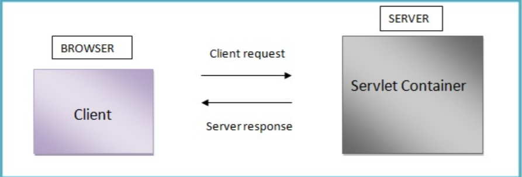

Servlets-Overview
Servlet is a Java programming language class, part of Java Enterprise Edition (Java EE). Sun Microsystems developed its first version 1.0 in the year 1997. Its current Version is Servlet 3.1. Servlets are used for creating dynamic web applications in java by extending the capability of a server. It can run on any web server integrated with a Servlet container. In fact, servlets have access to the entire family of Java APIs, including the JDBC API to access enterprise databases. (Exelixis Media (P.C., 2015)
Before Servlets, CGI (Common Gateway Interface) programming was used to create web applications. It is an interface that allows HTTP clients, such as Web browsers and other user agents, to pass information back to a server for processing (David Reily, Michael Reily,2012). They come up with certain disadvantages such as having a high response time because CGI programs execute in their own OS shell, not scalable not always secure or object-oriented. So, they need to find a solution. By this, Sun Microsystems developed Servlet which serves as their solution over traditional CGI technology.
Servlets Process
When client is requesting, the request is sent to a servlet container. Servlets are run inside the servlet container. No matter how many requests is send by the client. The time the request is arrived, the web server searches for the servlet and initiates it. The request of the client will be processed by the servlet and forwarded the response back to the server. Then the Server response is then forwarded to the client.

Servlets advantages according to Exelixis Media (P.C., 2015):
- Servlets are platform independent as they can run on any platform.
- The Servlet API inherits all the features of the Java platform. It means that, Servlets have access to the entire family of Java APIs, including the JDBC API to access enterprise databases.
- It builds and modifies the security logic for server-side extensions.
- Servlets inherit the security provided by the Web Server.
- In Servlet, only a single instance of the requests runs concurrently. It does not run in a separate process. So, it saves the memory by removing the overhead of creating a new process for each request.
- It collects input from users through web page forms, present records from a database or another source, and create web pages dynamically. It means that Servlet container may run multiple and execute web applications at the same time, each having multiple servlets running inside.